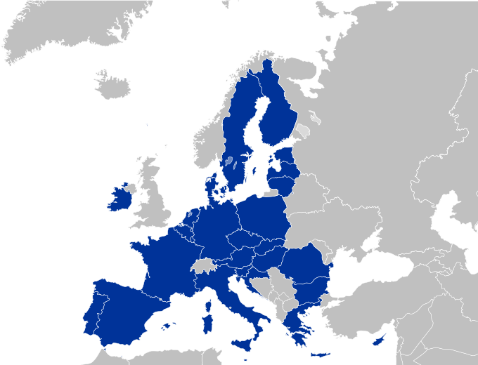

Date demografice
Populaţie

Densitatea populaţiei în UE în 2014
La 1 ianuarie 2016, populaţia Uniunii Europene era de aproximativ 510,1 milioane de persoane (6,9% din populaţia lumii).[43][44] În 2015, în UE-28 s-au născut 5,1 milioane de copii, ceea ce corespunde unei rate de natalitate de 10 la 1000, o rată sub media mondială.[45] Pentru comparaţie, rata natalităţii în UE-28 a fost de 10,6 în anul 2000, de 12,8 în 1985 şi de 16,3 în 1970. Rata de creştere a populaţiei a fost pozitivă la o valoare estimată de 0,23% în 2016.
În 2010, 47,3 milioane de persoane care au trăit în UE s-au născut în afara ţării lor rezidente. Aceasta corespunde cu 9,4% din totalul populaţiei UE. Dintre acestea, 31,4 milioane (6,3%) s-au născut în afara UE şi 16,0 milioane (3,2%) s-au născut într-un alt stat membru al UE. Cel mai mare număr absolut de persoane născute în afara UE au fost în: Germania (6,4 milioane), Franţa (5,1 milioane), Spania (4,1 milioane), Italia (3,2 milioane) şi Ţările de Jos (1,4 milioane).
Urbanizarea
UE cuprinde aproximativ 40 de zone urbane cu populații de peste un milion, inclusiv un megaoraș (oraș cu o populație de peste 10 milioane de locuitori), Paris.[49] În plus față de aglomerările mari, UE include și câteva regiuni urbane policentrice dens populate, care nu au un singur nucleu, dar au ieșit din conectarea mai multor orașe și acum cuprind o mare metropolă. Cea mai mare dintre aceste metropole policentrice include Rin-Ruhr cu aproximativ 11,5 milioane de locuitori (Köln, Dortmund, Düsseldorf și altele), Randstad cu aprox. 8,2 milioane (Amsterdam, Rotterdam, Haga, Utrecht și altele), Frankfurt-Rin-Main cu aproximativ 5,8 milioane (Frankfurt, Wiesbaden și altele), Diamantul Flamand cu aproximativ 5,5 milioane de locuitori (Anvers, Bruxelles, Leuven, Gent și altele), Silezia Superioară cu cca. 5,2 milioane (Katowice, Ostrava și altele) și Regiunea Øresund cu aproximativ 4 milioane (Copenhaga, Malmö).
Cele mai mari orașe din Uniunea Europeană
| Loc | Numele orașului | Stat | Pop. | Loc | Numele orașului | Stat | Pop. |
|---|---|---|---|---|---|---|---|
| 1 | Paris | Franța | 12.183.893 | 11 | Napoli | Italia | 3.101.002 |
| 2 | Madrid | Spania | 6.549.520 | 12 | Marsilia | Franța | 3,100,110 |
| 3 | Barcelona | Spania | 5.514.881 | 13 | Varșovia | Polonia | 3.025.034 |
| 4 | Berlin | Germania | 5.259.363 | 14 | Budapesta | Ungaria | 3.011.598 |
| 5 | Ruhr | Germania | 5.113.487 | 15 | München | Germania | 2.883.373 |
| 6 | Roma | Italia | 4.355.725 | 16 | Viena | Austria | 2.838.558 |
| 7 | Milano | Italia | 4.336.121 | 17 | Lisabona | Portugalia | 2.833.679 |
| 8 | Atena | Grecia | 3.576.590 | 18 | Stuttgart | Germania | 2.778.591 |
| 9 | Hamburg | Germania | 3.309.215 | 19 | Katowice | Polonia | 2.705.106 |
| 10 | Amsterdam | Țările de Jos | 3.242.852 | 20 | Frankfurt pe Main | Germania | 2.693.115 |
Uniunea Europeană
{kind=link}
- Capitală
Bruxelles (de facto)
- Cel mai mare oraș
Paris
- State membre
27 state
- Guvernare
Supranațional
- Alfabete oficiale
Latin Grec Chirilic